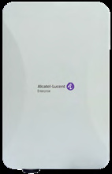

bp-ap1261-datasheet

R（触发场景）
- 老室外网扩容/替换，库里还有 AP1261（OAW-AP1261-RW-B）行项，核对规格与供电
- 客户外场只有 GbE + 802.3at，只想做基础室外覆盖，不需要 Wi-Fi 6
- 判断 AP1261 与 AP1360/1561 的升级替代关系
I（核心理念）
室外 802.11ac Wave2 双频 2x2 入门机型，全产品线里唯一的"前 Wi-Fi 6"在售型号（X10，<<
A1（选型差异）
- vs AP1361：1361 是 Wi-Fi 6（5G 4x4、~3Gbps、2.5GE+SFP+PSE 下联、扫描+BLE5.1），全新室外项目应选 1360 系列
- vs AP1561：需要 Wi-Fi 7/6GHz 时选 1561（9.328G、5GE、AFC）
- AP1261 仅适合：11ac 补点、价格极敏感、单口单电的存量环境
A2（规格速查表）
| 项目 | 规格 | 页码 |
|---|---|---|
| 射频架构 | 5GHz 802.11ac 2x2:2 MU-MIMO（867Mbps）+ 2.4GHz 802.11n 2x2:2（300Mbps） | << |
| 聚合速率 | 1.2Gbps（867M@5G + 300M@2.4G） | << |
| MIMO/速率档 | 5G 最高 VHT80；2.4G HT40；A-MPDU/A-MSDU 聚合；TxBF 波束赋形 | << |
| 以太网口 | 1x 10/100/1000BASE-T（RJ-45），802.3at PoE in；无第二口 | << |
| PoE/供电 | 仅 802.3at，最大功耗 20W；无 DC 口、无降级链描述 | << |
| USB-IoT | 无 USB、无 BLE/Zigbee | << |
| 蓝牙 | 无 | << |
| 天线 | 内置 2x2：2.4G 最大增益 7.67dBi、5G 7.77dBi；集成宽带天线 | << |
| 发射功率 | 每链 23dBm（2.4G/5G，受管制限制） | << |
| 工作温度 | -20°C ~ 55°C；存储 -40~85°C；湿度 5-95% 非凝结 | << |
| 防护 | IP67 | << |
| Mount | 抱杆/壁装，套件随 AP 默认附带（角度不可调）——全线唯一默认送套件的机型 | << |
| 容量 | 每射频 8 SSID（总 16）；384 客户端/AP | << |
| 尺寸重量 | 180x298x86.5mm，1065g | << |
| 管理平台 | OmniVista Cirrus 云 / OmniVista 2500 / Web 集群 255 AP（Admin/Viewer/GuestOperator） | << |
| 安全 | 802.11i/WPA2/WPA3/802.1X、ACL、wIPS/wIDS、Portal 认证 | << |
| 订购 | 仅 OAW-AP1261-RW-B 一个 SKU | << |
E（适用场景）
- 仓储/园区/停车场等室外基础覆盖，终端以 11ac/n 为主（<<
>>） - 应用感知 QoS（语音/视频/桌面共享分级）+ RDA 自动信道功率（DFS/TPC）（<<
>>） - 需要 RTLS 生态（Stanley Healthcare/Aeroscout）可用的老医疗外场（<<
>> 系列同述）
B（限制与坑）
- 11ac Wave2 已是上一代：新项目优先 AP1360（Wi-Fi 6）或 AP1561（Wi-Fi 7）（X10，<<
>>） - 无 USB/无 BLE/无第二网口：IoT 定位、有线扩展都做不了（X10，<<
>>） - 单 GbE 上联限制 867Mbps 射频能力，回程瓶颈要提前算（<<
>>） - "部分功能受当地管制设置限制"（X23，<<
>>），报价前的管制域核对不可省 - L3 漫游需 CSP/ESP；无 OmniVista 时部分功能受限（<<
>>） - 硬件终身保修 HLLW + 一年合作伙伴 SUPPORT 软件（<<
>>）
来源：bp-stellar-ap-datasheets fulltext.md p1-5；verified.md X10/X20/X23/P1/P26/F1
仅供内部学习使用 · 教材版权归 ALE Training Services 所有